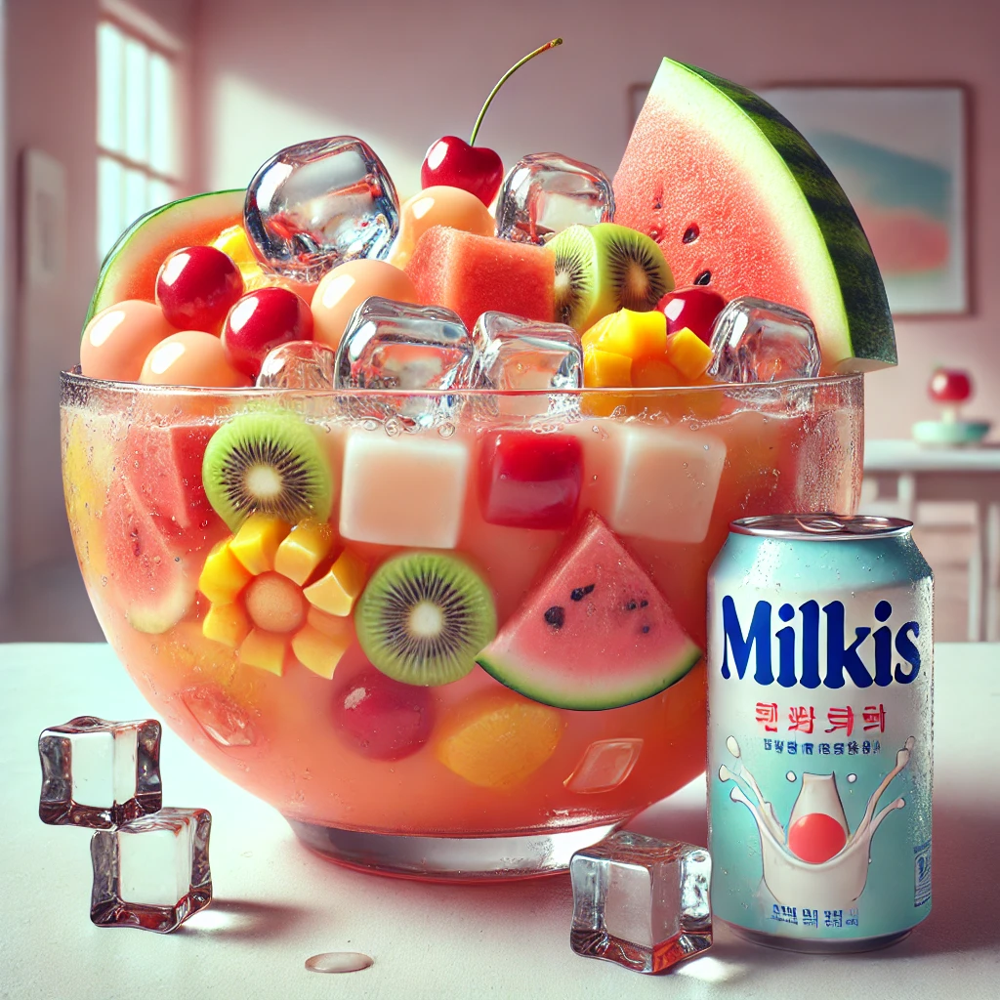

Ingredients
- 🥛 1 bottle Milky’s yogurt drink (original flavor)
- 🍉 1/2 cup watermelon, cubed
- 🍈 1/2 cup honeydew melon, cubed
- 🍍 1/2 cup pineapple chunks
- 🍓 1/2 cup strawberries, sliced
- 🔴 1/4 cup pomegranate seeds
- 🥤 1/2 cup lemon-lime soda (like Sprite)
- 🧊 Crushed ice
- 🌿 Optional: mint leaves or edible flowers for garnish
- ✨ Feel free to substitute or add other fruits you like or have on hand!
Instructions
- Chill the fruits and Milky’s drink in the fridge beforehand.
- In a large glass bowl, mix the Milky’s drink and lemon-lime soda.
- Gently fold in the chilled fruits and fruit cocktail.
- Add crushed ice and stir gently to mix.
- Garnish with mint leaves or edible flowers if desired, and serve immediately.
Tips
You can swap in strawberries, grapes, or kiwi if you want to customize the flavor. Add a splash of simple syrup if you prefer it sweeter.